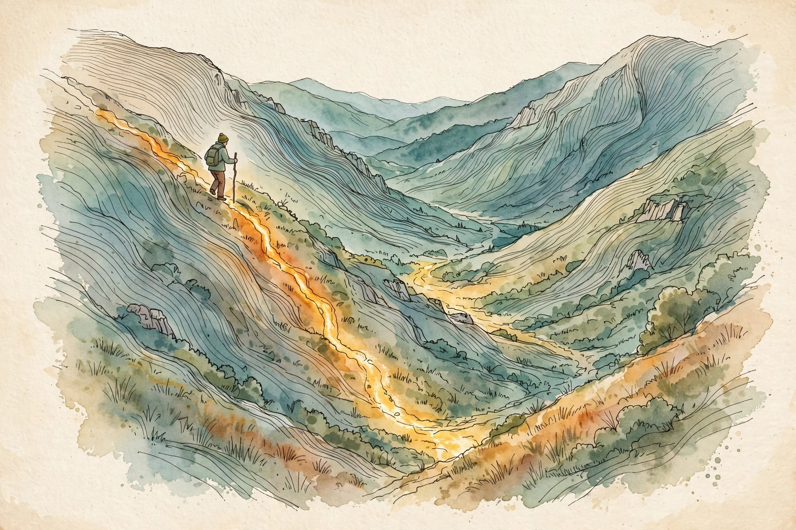

Narrated from the lesson document · no lecture transcript exists
Every training run is a walk downhill. This companion walks the full arc of Unit 03: partial derivatives, the chain rule, gradients and Hessians, Taylor approximation, convexity, the least-squares gradient, gradient descent, Newton, constraints, KKT duality, learning rates, and gradient checks.
From the lesson The idea, and every number beside it, comes from the cited section of the lesson file lessons/u03/lesson-03-calculus-and-optimization.md. The phrasing is the companion's.
Illustration Invented by the companion: an analogy, a toy with made-up values, or a what-if. Never lesson content.
companion Companion voice: the idea above the tag is from the lesson. The generalization below it is the companion's.
Provenance: the lesson is locally authored prerequisite bridge content. It does not reproduce an instructor lecture, and it carries no transcript. All claim classes are lesson-local.

Section 1 · C01
From the lessonC01
When a function takes two inputs, how do you ask what each one does? Hold one fixed and vary the other. For f(x, y) = x² + 3xy + y² at (2, 1), the analytic partials are df/dx = 2x + 3y = 7 and df/dy = 3x + 2y = 8.
From the lessonC01
The computed example checks the calculus against arithmetic. Finite difference with h = 1e-7, measured: df/dx = 6.99999999298484, df/dy = 7.999999995789153. Both agree with the analytic values to 8 digits. Remove partial derivatives and the phrase train the model has no arithmetic.
| Direction | Analytic | Finite difference, h = 1e-7 | Match |
|---|---|---|---|
| df/dx at (2, 1) | 7 | 6.99999999298484 | 8 digits |
| df/dy at (2, 1) | 8 | 7.999999995789153 | 8 digits |
The analytic partials say 7 and 8. Finite difference says 6.99999999298484 and 7.999999995789153. Eight digits of agreement is the receipt.
Section 2 · C02
From the lessonC02
How does a change in the input travel through a composition? One link at a time. y = (2x + 1)³ at x = 2. Set u = 2x + 1 = 5, so y = u³ = 125. The slopes: du/dx = 2, dy/du = 3u² = 75. The chain: dy/dx = 75 times 2 = 150.
From the lessonC02
The computed example: analytic dy/dx = 150, y(2) = 125. Finite difference with h = 1e-7, measured: 150.00000004761205. Agreement to 9 digits. Remove the chain rule and backpropagation in U08-C02 cannot run.
Section 3 · C03
From the lessonC03
One toy, three objects. f(x, y) = x² + 3xy + y² at (2, 1). The gradient is [7, 8]: the downhill arrow. For g(x) = [x², xy], the Jacobian by central difference, measured, is [[4, 0], [1, 2]], matching the analytic table exactly to float noise. The Hessian is [[2, 3], [3, 2]], constant. Remove these and no second-order method has a name.
| Object | Value at (2, 1) | Reading |
|---|---|---|
| grad f | [7, 8] | the downhill arrow |
| J of g | [[4, 0], [1, 2]] | slope map of the vector function |
| H of f | [[2, 3], [3, 2]] | curvature, constant here |
Section 4 · C04
From the lessonC04
How do you replace a curved function by a polynomial? Add terms until the error is small enough. For e^x at 0 evaluated at x = 0.5, measured: T1 error 0.1487212707001282, T2 error 0.023721270700128194. For sin(x) at 0, x = 0.5: sin(0.5) = 0.479425538604203, T3 error 0.0002588719375363202. Each term eats part of the curve.
From the lessonC04
Remove Taylor and Newton's method is magic instead of math. The quadratic model that Newton trusts is a Taylor polynomial of degree 2.
T1 on e^0.5 misses by 0.1487. T2 misses by 0.0237. Every extra term buys accuracy at the cost of one more derivative.
Section 5 · C05
From the lessonC05
Convex: f(x) = (x-1)², minimum at x = 1, second derivative 2 greater than 0 everywhere. One bowl. Non-convex: h(x) = x⁴ - 3x², minima at x = ±1.224744871391589, measured, with h″ = 12 there. At x = 0, h″(0) = -6.0, measured: a saddle between the bowls. Convexity is one bowl. Non-convexity is many traps.
From the lessonC05
Remove convexity and every training run could sit in a trap. The second derivative signs the curvature: positive is a bowl, negative is a hill, zero needs a closer look.
Second derivative 2 everywhere means one bowl and one answer. A saddle at h″(0) = -6.0 means the walk can stall between two answers.
Section 6 · C06
From the lessonC06
Points (1,2), (2,3), (3,5), (4,4). The gradient is a ballot: dJ/dw = (1/n) sum x_i (w x_i - y_i). Each point votes with its error times its x. At w = 1, measured: (1/4)[1(1-2) + 2(2-3) + 3(3-5) + 4(4-4)] = -2.25. Negative, so w must rise.
From the lessonC06
The closed form: w* = sum x_i y_i / sum x_i² = 39/30 = 1.3. Gradient at w*, measured: 4.440892098500626e-16, numerical zero. The ballot settles exactly where theory says. Remove the gradient and fitting has no update rule.
Section 7 · C07
From the lessonC07
J(w) = (w-3)², eta = 0.1, w0 = 0. GD after 10 steps, measured: w = 2.6778774528, J = 0.10376293541461637. SGD after 20 steps, seed 7, measured: w = 1.210517318455124, J = 3.2022. The noisy walk lags the full walk at equal step count, as theory predicts. Remove these and deep learning has no engine.
From the lessonC07, C11 Descent bench: J(w) = (w-3)² from w0 = 0. Pick eta and steps, then run the lesson's update.
eta: steps:
Update: w = w - eta times 2(w-3). Try eta = 0.5, 1.5, 2.1 and watch the regimes from C11.
GD reaches J = 0.1038 in 10 steps. SGD, seed 7, reaches only J = 3.2022 in 20 steps. Same bowl, slower walk.
Section 8 · C08
From the lessonC08
What if each step trusted the curvature, not just the slope? On the quadratic J(w) = (w-3)², one Newton step from 0 lands at 3.0, measured. Done in one. On the non-convex h(x) = x⁴ - 3x² from x0 = 1.0, measured iterates: 1.0, 1.333333, 1.236715, 1.224916, 1.224745, 1.224745.
From the lessonC08
Correct digits roughly double from step 3 on: 1.224916 to 1.224745. Newton reaches the bowl in 4 steps. Second-order optimizers need curvature, and the Hessian is its name.
Section 9 · C09
From the lessonC09
Minimize x² subject to x greater than or equal to 1. The answer is x* = 1, the boundary. The unconstrained best, x = 0, is a fantasy number nobody can use. The Lagrangian: L = x² - lam(x - 1). At x = 1 the multiplier must satisfy dL/dx = 2(1) - lam = 0, so lam* = 2, measured. The fine is 2 per unit of violation at the answer.
lam* = 2 says each unit of violation costs 2 at the optimum. The constraint has a price, and the multiplier names it.
Section 10 · C10
From the lessonC10
How do you prove that a fenced optimum is really optimal? Run the four-point inspection at x* = 1, lam* = 2, measured. Allowed: 1 ≥ 1, pass. Lam 2 ≥ 0, pass. Stationarity: 2(1) - 2 = 0, pass. Complementary slackness: 2(1 - 1) = 0, pass.
From the lessonC10
The dual value: g(lam) = min over x of [x² - lam(x-1)], reached at x = lam/2. At lam = 2, the minimum of x² - 2x + 2 is 1 at x = 1. Dual value 1 equals the primal value 1: zero duality gap, as convexity promises. Remove KKT and every constrained solver loses its certificate.
| KKT check | Value | Verdict |
|---|---|---|
| Allowed: x* ≥ 1 | 1 ≥ 1 | pass |
| Multiplier ≥ 0 | 2 ≥ 0 | pass |
| Stationarity: 2x* - lam* | 2 - 2 = 0 | pass |
| Slackness: lam*(x* - 1) | 2 × 0 = 0 | pass |
| Duality gap | primal 1, dual 1 | zero gap |
Section 11 · C11
From the lessonC11
How big a step can you take before the walk breaks? Measured on the lesson's bowl: eta = 0.05 crawls, J ends at 0.7178979876918524. eta = 0.1 ends at 0.04250129834582688. eta = 0.5 lands in one step, J ends at 0.0. eta = 1.5 oscillates and explodes to 150994944.0. eta = 2.1 explodes to 11963051962064.254. Step size picks the regime: slow, fast, or exploded.
From the lessonC11
Use the descent bench in Section 7. Set eta = 0.5 and watch the one-step landing. Set eta = 1.5 and watch the explosion. The numbers above are the lesson's measured endpoints.
eta = 0.5 lands in one step with J = 0.0. eta = 1.5 explodes to 150994944.0. Between them lies no smooth middle.
Section 12 · C12
From the lessonC12
How do you know the gradient your code returns is the gradient? Audit it with finite differences. J(w) = sin(w) + w² at w = 1. Analytic: 2.5403023058681398. Finite difference: 2.540302306286435. Relative error 1.6466354233040405e-10, measured: pass. The broken variant returns -2.5403: relative error 2.0: fail.
From the lessonC12
Six lines of code, and they debug with money. Run the check once per new gradient, then turn it off: finite differences are too slow for training.
| Variant | Returned gradient | Relative error | Verdict |
|---|---|---|---|
| correct | 2.5403023058681398 | 1.65e-10 | pass |
| broken sign | -2.5403 | 2.0 | fail |
Relative error 1.65e-10 means the code is right. Relative error 2.0 means the sign is flipped. One number tells the story.
Wisdom index